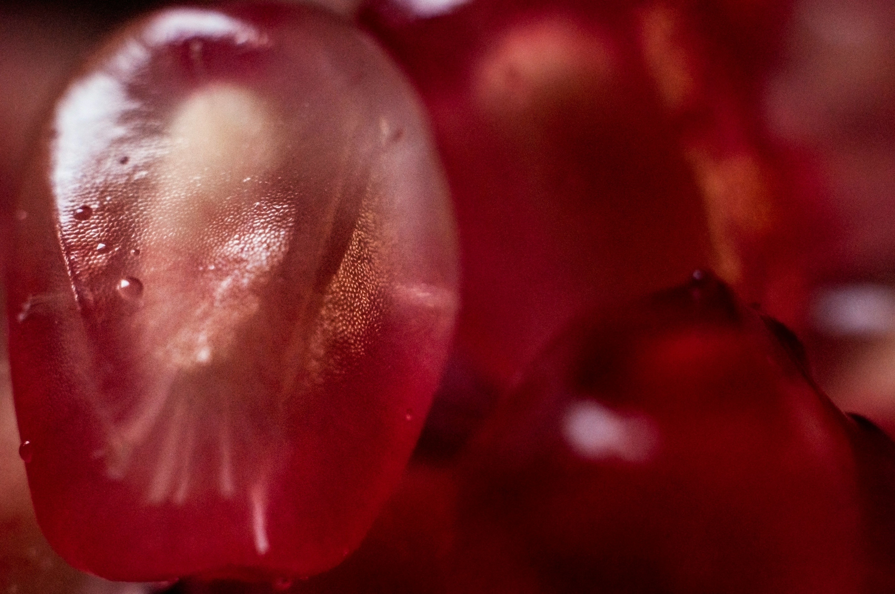

Pomegranate Bites

Maria Carolina MS, or Lina for short, is a junior student at Colégio Santa Cruz. Born and raised in São Paulo, Brazil, she entered the creative writing world when she was twelve years old, and has never stopped writing since. From theater to dance classes, she is always surrounded by art. That immersion is what moves her to write longer pieces, such as her fantasy novel-in-progress, Forever Away. You will likely find her in an indie bookstore or listening to music in her room with her two dogs.
The following prose was inspired by a small metal sign on a bench: “To Sasha, and a lifetime of pomegranates! Love, Isabel.”
Pomegranate Bites
My Dearest Sasha,
I still feel your breath on my neck when I am alone. I still feel your fingers tangled with mine when I'm walking down the street; even as the air invades and runs through them, my hands still feel warm when I get home. I can’t say I missed you once I’ve felt you by my side every single second since that night.
Yesterday I went outside to buy you flowers, and I saw an ice cream shop on the street. It was a white, old-looking house that had hanging light bulbs at the entrance. The floor was made out of light brown and green tiles, the tables were small and the seats looked comfortable. As soon as I felt the soft scent of fruits and sugar, I heard your voice, asking to go inside. You promised you would even pay this time if I said yes – both of us knew you wouldn't.
I am a weak woman. I can't resist but to grant your very wish, so I bought two ice creams: a chocolate and strawberry. I was happy getting you something sweet to eat after so long. It pained me to watch you, for months, following the strict diet the doctors assigned you. Milk, smashed potatoes, scrambled eggs, saline, pills... and that one Pomegranate.
I remember vividly when you took your first bite of the Fruit, on December 27th, while learning your diagnosis. I was holding your hand so tightly the edges of our fingers were almost reaching a purple shade. I tried to look deep into your eyes, but you refused to look my way. I kissed your knuckles and left the hospital room, giving you some space.
It didn't last long. The next day, I was already back, next to your bed, on that small chair they have for visitors. Your palms were dirty in wine red, holding a small seed. I didn't comment on it. You tried making a joke, and I apologize for not laughing back then. You took a strand of hair that was falling over my face and gently brushed it back behind my ear, whispering,
“Everything will be fine.”
As the days passed by, the tension eased. I would tell you about our cat, bring card games, flowers, even those extravagant annoying plushies from the shop that you always smiled at. Sometimes you would tell me I was acting weird, and I remember answering the same thing every time: I'm only tired. You knew I was lying.
I was terrified and you saw it right through me... You saw it in the depth of the circles under my eyes, the way my shoulders were always tense, how the words would often get stuck in my throat. I was utterly helpless, scrambling to keep the most of you, to see the beautiful way your lips curl when you smiled, always wondering if that would be the last time I would get to see it. I wanted to be the strong one, for both of us.
Even when you were asleep, I would stay by your side. I was so insistent that the nurses eventually stopped asking me to go home. I could stay for as long as I wanted to, even past visiting hours. I would often stare at the Pomegranate on the bedside table, each day growing smaller. Then, I would fix your blankets over your shoulders, check your vital screen for heartbeats, and pass out of exhaustion, letting the soft rhythm soothe me.
One of those nights, I woke up with your blanket over my shoulders. My hair was messy, just like when you used to run your hand through it. You said it wasn't your doing, but at the door, the nurses told me the truth. You are truly impossible, going out of your way once again just to take care of me. I remember smiling at your stubbornness.
Focusing on the good moments kept me sane. It kept my head out of every cough, every fever, and every single bite of that Pomegranate. When I close my eyes, sometimes I see it all over again: how you would always take small pieces when you thought I wasn’t looking. Slowly walking, crawling, towards the only possible outcome.
When you were at your last bites, I remember finally confronting you about it. I yelled at you, demanded you to never eat not even another seed. You asked me to come closer and your fragile arm reached for my neck. I wanted to argue further, but your thumb ran up my jaw, and my tears soon soaked your cheeks. I closed my eyes and leaned my forehead over yours. We remained in silence for a while, taking in each other's breaths. I felt the gentle, bittersweet taste of Pomegranate coming from your lips, and hugged you, desperate.
I shouldn't have been so rough, but I don't apologize for my behavior. I do apologize for not kissing you that night. For not giving you everything I had and some more. For not taking you to that show you wanted to go because I was tired. For not letting you adopt that other cat you would get an over the top, silly name. And for not telling you that I loved you enough times, even though you never doubted the feelings I had for you.
I have no idea how you were so calm towards the idea of your own end. But I think I am starting to understand it a bit more myself. So here, at your grave, I'll leave you some Pomegranate flowers and a cup of melted ice cream, alongside this letter.
Whenever you are, please, wait for me.
Love,
Isabel